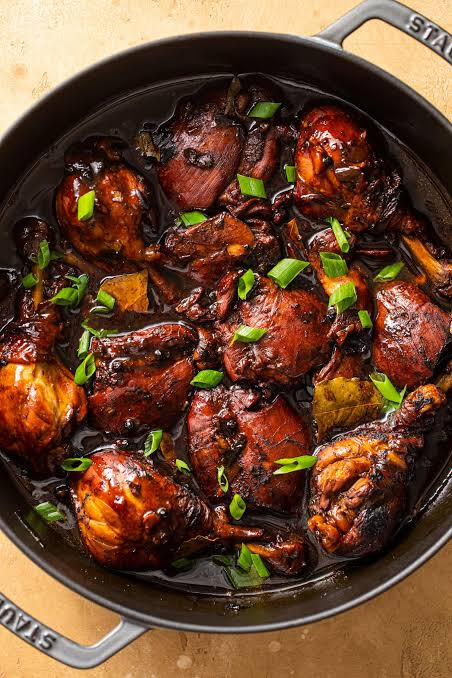

Welcome to This Site!
By: Mark Joseph Bolisay
Adobo is a quintessential Filipino dish that boasts a rich history and a symphony of flavors. This culinary masterpiece is considered the unofficial national dish of the Philippines, reflecting the diverse and vibrant gastronomic culture of the archipelago. The name "adobo" is derived from the Spanish term "adobar," meaning to marinate or season, which perfectly encapsulates the cooking process involved in preparing this delectable dish.
At its core, adobo is a savory and slightly tangy stew, renowned for its ability to transcend regional variations while maintaining a distinctive Filipino identity. The primary ingredients typically include meat-commonly pork or chicken-marinated and slow-cooked in a flavorful blend of soy sauce, vinegar, garlic, bay leaves, and various spices. This unique combination results in a harmonious interplay of salty, sour, and umami notes that tantalize the taste buds.